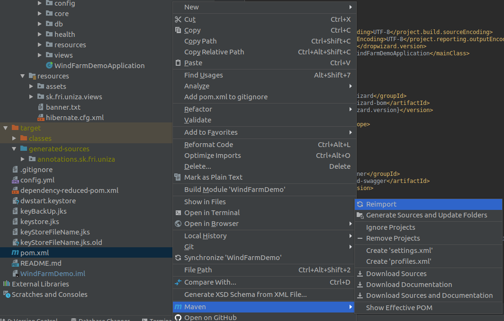
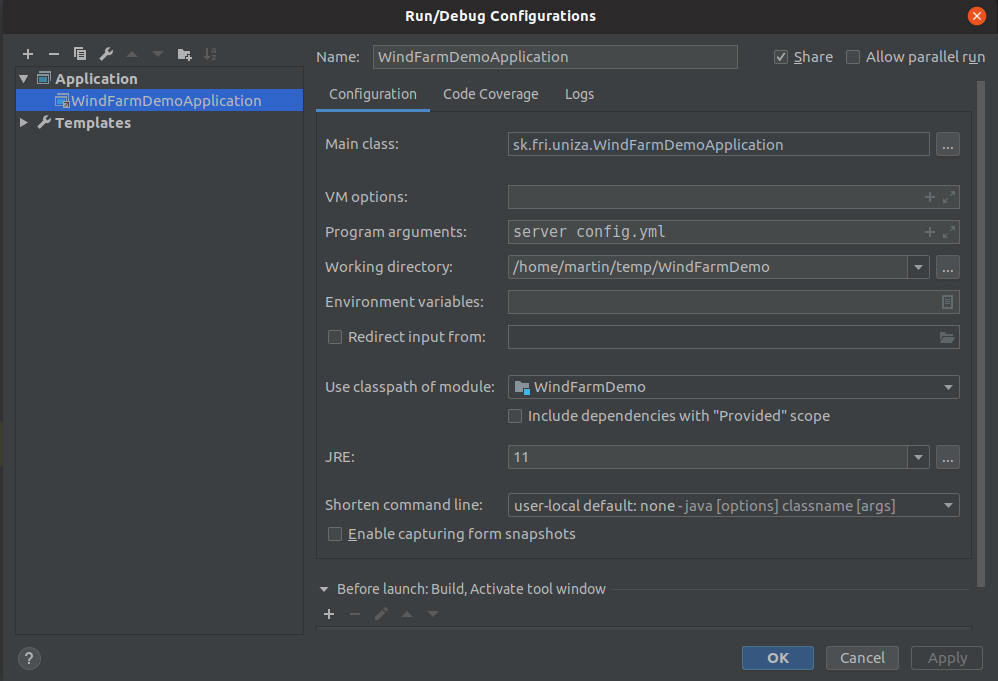

Importovanie projektu¶
Naklonovanie projektu z GIT repozitára.
File--> New--> Projetc from Version Control--> Git
Url:https://github.com/hudikm/WindFarmDemo.git
-
Po naklonovaní povolte automaticke importovanie knižníc

-
Skompilujte projekt (Build)
Chyba kompilácie
V prípade, že kompilácia neprebehne správne spustite manuálne import knižníc.
pom.xml--> Maven--> Reimport -
Spustenie alikácie
- Spustite aplikáciu cez príkazový riadok
java -jar target/WindFarmDemo-1.0-SNAPSHOT.jar server config.ymlalebo nakonfigurujte prostredie: - Aplikácia je spustená na adrese:
http://localhost:8080
- Spustite aplikáciu cez príkazový riadok
Inštalácia MariaDB
Na inštalovanie databázy odporúčam použiť balík XAMPP, ktorý obsahuje Apache + MariaDB + PHP + Perl. Databázu može konfigurovať pomocou PHPmyadmin prostredia. XAMPP
Príhlasenie sa do aplikácie:¶
Na prihláseni do aplikácie možete použiť dva štandardne vytvorené účty:
-
user@gmail.com (readonly)
-
admin@gmail.com (admin)
Heslo: heslo
Tieto uživatelské účty sú zadefinované v triede: UsersDao